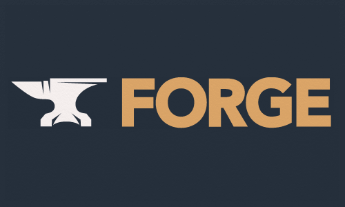

Qualifications
My Resume:
Download
LinkedIn
Below are expansions upon a handful of highlights from my resume.
Through the classes taken at A&M and in highschool, I have some experience with Java, Python, C++, HTML, CSS, JavaScript, Scheme. I have also started following some Rust tutorials on my own time.
My preferred IDE is Visual Studios, but I have some experience with Eclipse, Anaconda, BlueJ, and Jupiter.
While my experiences with iOS are limited, I am more than comfortable with Windows and various Linux distributions (Particularly Ubuntu, Manjaro, and WSL2).
The mathematical background I have gathered in the past years at A&M span across Calculus 3, Linear Algebra, Statistics, and Discrete Mathematics.
My immediate interests within Computer Science shifts according to classes, personal projects, and my ever changing professional goals. Initially, like most of my peers, I applied to the major in the hopes of learning to make video games. However, since high school, my eyes have been opened to the scope of the field. As I dig deeper into the curriculum, I have cultured a fascination with subjects such as User Interface, Data Management, and Algorithm Implementation to name a few. There are tons of opportunities for innovation and making a positive impact in society outside of pure entertainment. My goals are constantly evolving and I find myself drawn to new and exciting challenges within the field. I am constantly learning and growing as a student.


Most summer jobs have been relatively mundane. However, I was lucky enough in 2021 to teach as a STEM Summer Camp Instructor for children ages 4-12 at Idea Lab Kids. Each class lasted only 1 week, but every camper left with a project and far more comfort using computers. When I was not teaching, I was doing rapid and relentless troubleshooting with any one of the 16 kids in a typical class. Many of the younger kids had not even used TV remotes. So they would be taught how to use computers and build a simple Roblox game in the Roblox Studio level designer. Older kids tended to be touch more tech-savvy. We designed a simple Minecraft mod which introduced them to programming basics and project management.
Here's an example to showcase the type of instructional documentation I wrote up for the students.